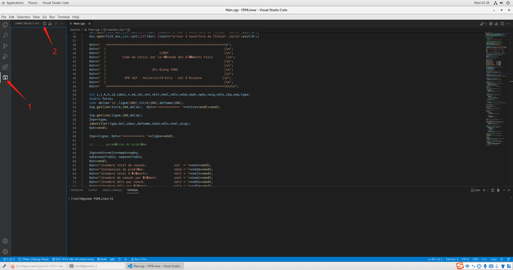

安装 CMake
-
安装gcc等依赖程序
yum install -y gcc gcc-c++ wget -
获取CMake源码包
wget https://cmake.org/files/v3.23/cmake-3.23.2.tar.gz -
解压并安装
1234tar -xzvf cmake-3.23.2.tar.gzcd cmake-3.23.2./bootstrapgmake && install
安装 VSCode
-
yum 命令安装
123456rpm --import https://packages.microsoft.com/keys/microsoft.ascsh -c 'echo -e "[code]\nname=Visual Studio Code\nbaseurl=https://packages.microsoft.com/yumrepos/vscode\nenabled=1\ngpgcheck=1\ngpgkey=https://packages.microsoft.com/keys/microsoft.asc" > /etc/yum.repos.d/vscode.repo'yum check-updateyum install code -
下载 rpm 包安装
复制链接下载最新 rpm 包：https://update.code.visualstudio.com/1.70.1/linux-rpm-x64/stable
安装：rpm -ivh code-1.70.1-1660113182.el7.x86_64.rpm
启动 VSCode：
- 通过桌面程序启动
- 通过终端启动

- 点击左侧插件菜单栏搜索C++安装扩展包

将源码通过 CMake 编译
- 打开源码文件夹
- 点击 cmake 菜单栏，点击config project
 - config完成后会生成如下目录、再点击如图build生成二进制文件
开始调试
-
点击调试菜单、生成launch.json文件

-
配置调试参数
 123456789101112131415161718192021222324252627"configurations": [{"name": "(gdb) Launch","type": "cppdbg","request": "launch",//仅需修改以下两行"program": "${workspaceFolder}/lib/centos64/FEMLinear", //程序的路径"args": ["-inp","${workspaceFolder}/examples/barre2d"], //启动参数"stopAtEntry": false,"cwd": "${fileDirname}","environment": [],"externalConsole": false,"MIMode": "gdb","setupCommands": [{"description": "Enable pretty-printing for gdb","text": "-enable-pretty-printing","ignoreFailures": true},{"description": "Set Disassembly Flavor to Intel","text": "-gdb-set disassembly-flavor intel","ignoreFailures": true}]}]
123456789101112131415161718192021222324252627"configurations": [{"name": "(gdb) Launch","type": "cppdbg","request": "launch",//仅需修改以下两行"program": "${workspaceFolder}/lib/centos64/FEMLinear", //程序的路径"args": ["-inp","${workspaceFolder}/examples/barre2d"], //启动参数"stopAtEntry": false,"cwd": "${fileDirname}","environment": [],"externalConsole": false,"MIMode": "gdb","setupCommands": [{"description": "Enable pretty-printing for gdb","text": "-enable-pretty-printing","ignoreFailures": true},{"description": "Set Disassembly Flavor to Intel","text": "-gdb-set disassembly-flavor intel","ignoreFailures": true}]}] -
设置断点，启动调试